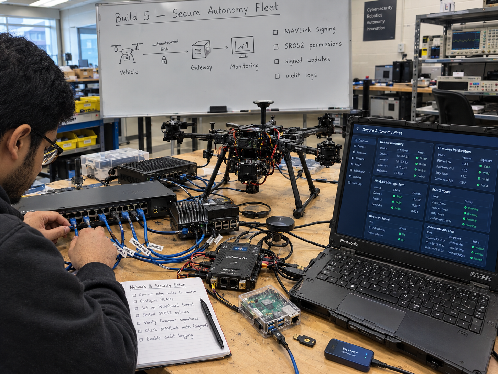
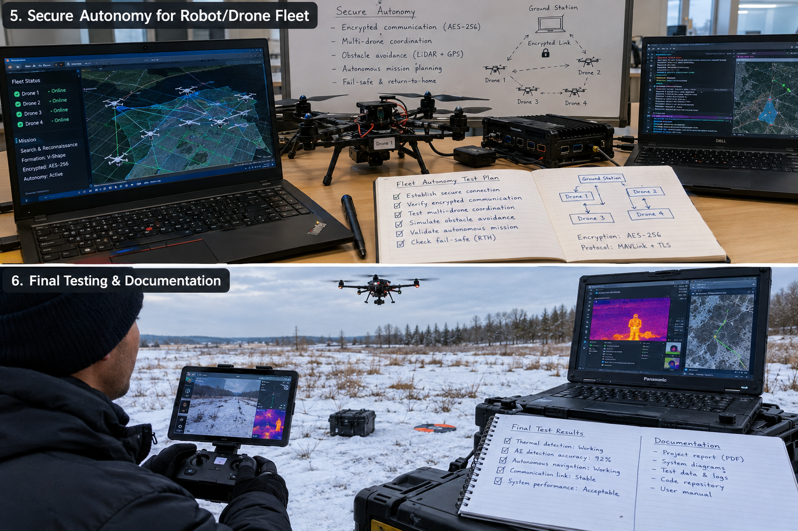
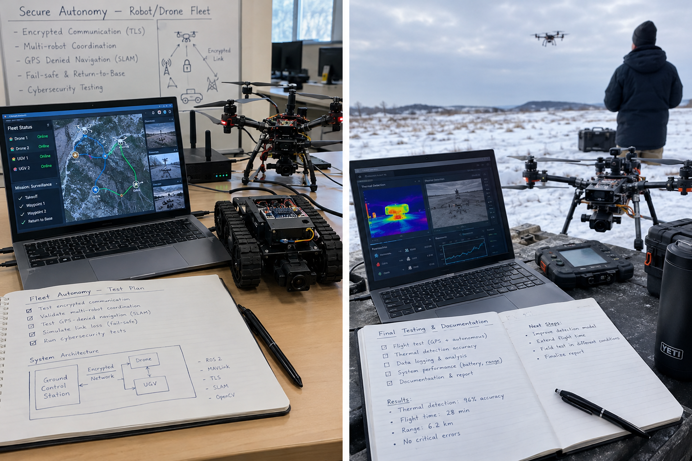

Secure Autonomy for the Robot and Drone Fleet
A STRIDE threat model and tested hardening controls for a robot and drone fleet: MAVLink 2 signing, Ed25519 signed firmware, SROS2 least-privilege enclaves, WireGuard link encryption, a pymavlink IDS, and signed A/B updates, attacked in the lab first.
Overview
This is a build guide for hardening a small fleet of ArduPilot drones and ROS 2 ground robots against takeover, spoofed commands, malicious firmware, and untracked change. It starts from a STRIDE threat model across every trust boundary, then applies six controls: MAVLink 2 packet signing, WireGuard link encryption, Ed25519 signed firmware, SROS2 least-privilege enclaves, a pymavlink intrusion detector feeding a SIEM, and signed A/B over-the-air updates. Every control is attacked in the lab before it is trusted.
Status: Planned. This page is a published build guide written against the Defence Drone Initiative's digital-enablers stream, which covers communications, cyber, and command and control for autonomous platforms (verify). Nothing on this page is built, attacked, or measured yet. Each control below is defined together with the test case that will prove or break it, and results will appear here only after the lab work runs.
Why this build exists: a security operations background is the differentiator. Most hobby fleets ship with open telemetry links, unsigned firmware, a flat ROS 2 network where any node can publish to any topic, and no logging at all. The professional version of this work is to attack your own fleet in the lab, fix what breaks, and monitor what remains. That cycle, threat model, control, attack, evidence, is the deliverable, not any single tool.
Scope honesty up front: this guide covers a bench fleet of one to three vehicles on a private, isolated network. It does not claim to secure an operational military fleet, and it stays strictly defensive: nothing here jams, spoofs, or carries munitions, RF work is receive-only, and GNSS work is detection only. Only gear owned by the project gets tested, with permission.
Concept Illustrations



Target Spec
There is no single government spec sheet for this build the way the Arctic UAS challenge defines one for the cold-weather drone. The requirement comes from the Defence Drone Initiative's digital-enablers stream, communications, cyber, and C2 for autonomous platforms (verify), read together with what community compliance reviews actually ask for. The table below turns that into measurable targets. Each row gets a test case with pass/fail evidence before it is claimed.
| Requirement | What it means for this fleet | Status |
|---|---|---|
| Authenticated command link | MAVLink 2 signing on every GCS-to-vehicle link; unsigned, wrongly signed, and replayed packets rejected; MAVLink 1 and unsigned traffic rejected by policy | Planned |
| Encrypted link | WireGuard between vehicle and ground station over IP; serial radios documented with their limits stated, not encrypted by this control | Planned |
| Signed firmware | ArduPilot signed bootloader plus signed firmware images, up to two key pairs, Ed25519 via Monocypher; tampered image refused at boot | Planned |
| Least-privilege ROS 2 network | SROS2 keystore with one enclave per node, signed governance and permissions, multicast discovery restricted, DDS ports firewalled | Planned |
| Intrusion detection | pymavlink-based detector alerting on unsigned traffic, key-setup attempts, unknown sysIDs, unexpected arm/disarm, timestamp regressions, duplicate sysIDs, MAVLink 1 frames; alerts shipped to a SIEM | Planned |
| Update integrity | Signed A/B over-the-air updates with TPM measured boot, reusing the secure-fleet-updates work; a tampered update must be rejected | Planned |
| Evidence pack | Threat model document, test-case table with pass/fail evidence, and a hardening checklist suitable for a compliance review | Planned |
What the Hobby Version Proves
A bench fleet cannot prove operational security for a military program. What it can prove, with published evidence, is that the standard open-source controls work when they are configured deliberately, and exactly how they fail when they are not.
- A written threat model. STRIDE across every trust boundary: the radio link between ground station and vehicle, the companion computer to flight controller link, the ROS 2 network, USB and serial ports, firmware and OTA update paths, and logs and keys. Output is a data-flow diagram, an asset list, a threat table, and one test case per threat.
- Controls with attack evidence. For each of the six controls, a demonstration that the attack works with the control off and fails with the control on. Community guidance for compliance reviews is specific here: show unsigned and wrongly signed packets rejected, and correctly signed packets accepted.
- A working detector, not just walls. Prevention controls get bypassed eventually; the pymavlink IDS and SIEM pipeline prove the fleet notices when they are.
- A measured cost. SROS2 enforcement and WireGuard are not free; the build measures CPU and latency with and without each control so the overhead is a number, not a guess.
- A reusable hardening checklist. The deliverable another hobby fleet could apply in a weekend, with the evidence format a compliance reviewer expects.
Architecture
mission planning + monitoring"] WG["WireGuard tunnel
link encryption over IP"] FC["Pixhawk or Cube FC
ArduPilot, MAVLink 2 signing
signed Ed25519 firmware"] PI["Pi 5 companion
ROS 2 Jazzy, SROS2 enclaves"] IDS["pymavlink IDS
signing, sysID, replay checks"] SIEM["SIEM
Wazuh or ELK"] OTA["Signed A/B OTA
TPM measured boot"] GCS <-->|"signed MAVLink 2"| WG WG <--> FC FC <-->|"serial, key setup over USB only"| PI PI --> IDS IDS --> SIEM OTA --> FC
Figure 1: every trust boundary carries a named control. The GCS link is encrypted by WireGuard and authenticated by MAVLink 2 signing; firmware and updates are signed; the ROS 2 graph is partitioned by SROS2 enclaves; and a protocol-aware IDS watches the traffic that remains, alerting into a SIEM.
The design rule is that each boundary in the threat model maps to exactly one primary control, and the IDS watches all of them. MAVLink 2 signing authenticates commands and blocks replay but does not encrypt, so WireGuard covers confidentiality on the IP path. Signing keys travel only in SETUP_SIGNING over a secure link like USB, never over the radio. The ROS 2 side is partitioned so a compromised node cannot reach topics outside its enclave. Updates and firmware share the signature discipline so a tampered image is refused at two independent points: at boot and at install.
Nothing on this diagram touches the open internet. The lab runs SITL instances and bench hardware on an isolated VLAN behind the managed switch, because attacking your own fleet is only legitimate on infrastructure you own and control.
How to Build It
Phase 0: Threat model first (week 1)
- Draw the data-flow diagram: ground station, radio link, flight controller, companion computer, ROS 2 graph, USB and serial ports, firmware and OTA paths, logs, and key storage.
- Build the asset list: signing keys, firmware images, mission data, telemetry logs, hardware tokens.
- Run STRIDE (spoofing, tampering, repudiation, information disclosure, denial of service, elevation of privilege) across each boundary and record one threat per row.
- Write one test case per threat. A threat without a test case is a worry, not a requirement.
Phase 1: MAVLink 2 signing (weeks 2-3)
- Enable signing on the GCS-to-vehicle links. Signing appends a 13-byte block to each packet: a link ID, a 48-bit timestamp in 10 microsecond units since 2015-01-01, and a 48-bit signature made of the first 6 bytes of SHA-256 over the key plus packet.
- Understand the boundary: signing authenticates and blocks replay, it does not encrypt. One shared 32-byte symmetric key per link.
- Provision keys only over a secure link: the key travels in SETUP_SIGNING, over USB, never over the radio. On PX4 the key is stored as a file on the SD card; logs must never capture the key.
- Run the three compliance-review tests: unsigned packets rejected, wrongly signed packets rejected, correctly signed packets accepted. Add the fourth: replayed packets rejected.
- Set policy for MAVLink 1 and unsigned traffic to reject, then verify the policy holds.
Phase 2: Link encryption (week 3)
- Stand up a WireGuard tunnel between the vehicle companion computer and the ground station over IP, and route telemetry through it.
- Document what this does not cover: serial radios stay outside the tunnel, so their limits get stated in the threat model rather than claimed as encrypted.
Phase 3: Signed firmware (weeks 4-5)
- Practise on a spare board first. The ArduPilot secure bootloader verifies signed firmware images, up to two key pairs, using Ed25519 via the Monocypher library. A forum post claiming ECDSA is wrong.
- Keep the private key offline. Keys are manageable over the MAVLink secure-command path, so that path is part of the security boundary and gets its own test case.
- Know the failure modes from forum reports before touching the real fleet: the bootloader allows unsigned firmware when all public keys are removed; USB can bypass MAVLink signing, so lock down DFU; a wrongly signed board loops in the secure bootloader, which is why the spare board exists.
- Test: a tampered image refused at boot; a correctly signed image accepted; key removal behaviour documented, not discovered by accident.
Phase 4: SROS2 least-privilege enclaves (weeks 5-7)
- Stand on ROS 2 Jazzy (Ubuntu 24.04). Lyrical Luth went GA May 22, 2026 as an LTS to May 2031, but package support lags, so Jazzy is the base.
- Create the SROS2 keystore and one enclave per node, with signed governance and permissions files; enforcement comes from the security environment variables.
- Write least-privilege topic policies: each node can publish and subscribe only what its job requires.
- Restrict multicast discovery and firewall the DDS ports on the fleet network.
- Measure CPU and latency with and without enforcement, and publish both numbers.
Phase 5: Monitoring and IDS (weeks 7-9)
- Build the primary detector on pymavlink. Suricata has no native MAVLink parser, so it is used only for raw-payload rules or flow logging, not protocol-aware detection.
- Alert on: unsigned MAVLink 2 traffic, SETUP_SIGNING attempts, parameter writes and mission uploads from unknown sysIDs, arm/disarm from unexpected sources, timestamp regressions, duplicate sysIDs, and MAVLink 1 frames.
- Add a ROS graph monitor that flags new nodes, topics, and QoS changes against the approved baseline.
- Ship alerts to a SIEM: Wazuh or ELK. An alert nobody reads is not a control.
Phase 6: Update integrity (week 9)
- Reuse the secure fleet updates work: TPM measured boot and signed A/B updates.
- Demonstrate a tampered update rejected, with the evidence logged for the test-case table.
Phase 7: Attack your own lab (weeks 9-12)
- Run ArduPilot SITL instances on an isolated network, never against anything you do not own.
- Inject unsigned, replayed, and malformed MAVLink traffic at the fleet and record what each control and the IDS do.
- Fuzz the parsers with AFL++ or libFuzzer and track crashes to closure.
- No RF jamming or spoofing, ever. GNSS work is detection only.
- Write the spec-gap report and publish the hardening checklist with the evidence table.
Spec-Gap Table
Honest status as of publication: every control is designed and every test case is written, and none of them have run yet. This table will be rewritten with evidence as the lab phases complete.
| Control | Test case | Status |
|---|---|---|
| MAVLink 2 signing | Unsigned and wrongly signed rejected; correctly signed accepted; replays rejected | Planned, not tested |
| MAVLink 1 / unsigned policy | Reject-by-policy verified on every link | Planned, not tested |
| WireGuard link encryption | Telemetry confidential on the IP path; serial-radio limits documented | Planned, not tested |
| Signed firmware (Ed25519) | Tampered image refused at boot; signed image accepted; key-removal behaviour documented | Planned, spare board first |
| USB / DFU lockdown | USB bypass of MAVLink signing closed or documented as residual risk | Planned, not tested |
| SROS2 enclaves | Cross-enclave publish/subscribe blocked; CPU and latency overhead measured both ways | Planned, not tested |
| pymavlink IDS | Each alert class fires on its injected attack; no false silence | Planned, not tested |
| SIEM pipeline | Alerts reach Wazuh or ELK and are readable by a human | Planned, not tested |
| Signed A/B OTA | Tampered update rejected; rollback path verified | Planned, reuses secure-fleet-updates design |
| Parser fuzzing | AFL++/libFuzzer runs against MAVLink parsers, crashes triaged | Planned, not tested |
| Operational fleet security | Out of scope: bench fleet on an isolated network only | Not claimed |
Metrics to Publish
- Test-case pass/fail table with evidence: one row per threat, one artefact per row (pcap, log excerpt, or console capture).
- Signing acceptance and rejection counts: unsigned, wrongly signed, correctly signed, replayed.
- SROS2 overhead: CPU and end-to-end latency with and without enclave enforcement.
- WireGuard overhead on the telemetry path, measured the same way.
- IDS alert latency: injected attack to SIEM-visible alert, in seconds.
- IDS coverage: alert classes tested versus alert classes defined, with misses named.
- Fuzzing results: crashes found, crashes fixed, parser coverage notes.
- Key-handling audit: proof that no signing key appears in any log or telemetry capture.
Hardware to Buy First
- Spare Pixhawk or Cube flight controller: the signed-bootloader practice board, because a wrongly signed board loops in the secure bootloader and that lesson should happen on a spare.
- Pi 5 companion computer: carries the WireGuard endpoint, the ROS 2 nodes, and the pymavlink IDS.
- Two hardware security keys: one in use, one backup, for key custody and signing operations.
- Managed switch with VLANs: the isolated lab network boundary that makes attack testing legitimate and contained.
Vehicles already in the program (the X500-class quad and the rover chassis) become the test fleet; nothing airworthy is required before Phase 7, because SITL carries the early attack work.
Safety and Legal Notes
Frequently Asked Questions
Does MAVLink 2 signing encrypt drone telemetry?
No. MAVLink 2 signing adds a 13-byte block carrying a link ID, a 48-bit timestamp, and a 48-bit signature derived from SHA-256 over the key and packet. It authenticates the sender and blocks replayed packets, but the payload stays readable. Encryption is a separate control, in this guide a WireGuard tunnel over the IP link.
Is ArduPilot signed firmware ECDSA or Ed25519?
Ed25519, implemented via the Monocypher library. A forum post claiming the signed bootloader uses ECDSA is wrong. The bootloader accepts up to two public key pairs and verifies signed firmware images at boot, and unsigned firmware boots again if all public keys are removed, so key management is part of the security boundary.
What is SROS2 and what does it protect in a robot fleet?
SROS2 is the security tooling for ROS 2: a keystore, one enclave per node, and signed governance and permissions files enforced through security environment variables. It gives least-privilege topic access per node, so a compromised node cannot publish or subscribe outside its enclave. This guide also restricts multicast discovery and firewalls the DDS ports.
Can Suricata detect MAVLink attacks on a drone link?
Not directly. Suricata has no native MAVLink parser, so this guide uses it only for raw-payload rules or flow logging. The primary detector is a pymavlink-based IDS that understands the protocol and alerts on unsigned MAVLink 2 frames, SETUP_SIGNING attempts, unknown sysIDs writing parameters, arm/disarm from unexpected sources, timestamp regressions, duplicate sysIDs, and MAVLink 1 frames.
Is this secure fleet already built and tested?
No. This page is a published build guide with status Planned. Nothing here has been built, attacked, or measured yet. Every control is defined with a concrete test case in advance, and results will be published with pass/fail evidence only after the lab attacks run against SITL instances on an isolated network.
Does this project jam, spoof, or disable drones?
No. The build is defensive only: it authenticates, encrypts, signs, and monitors its own vehicles. Lab attacks run against its own SITL fleet on an isolated network. There is no RF jamming or spoofing of any kind, and GNSS work is detection only. Testing touches only gear owned by the project, with permission.
Roadmap
- Now to December: this build and the counter-drone scoring harness come first in the program calendar because they are software and simulation work; the southern Ontario winter is no obstacle when the fleet under attack is SITL instances on a lab VLAN.
- Week 1: publish the STRIDE threat model, data-flow diagram, asset list, and the threat-to-test-case table.
- December to March: run Phases 1-7 indoors; the cold-weather hardware builds (Arctic drone bench work, snow navigation) run in parallel, and their vehicles join this fleet as signed-firmware test subjects once they exist.
- Evidence publication: the test-case table with pass/fail artefacts and the hardening checklist land here as each phase completes, replacing the Planned rows in the gap table.
- Program fit: the evidence pack is written so it maps onto the digital-enablers language of the MINERVA challenges run through Innovative Solutions Canada and the IDEaS program's counter-drone work, where cyber-resilient C2 for autonomous platforms is a stated interest.
Cite This Page
Citation formats
Plain text
Taki Sadik, "Secure Fleet Autonomy Build Guide", TYFSADIK, https://tyfsadik.org/work/defence/secure-fleet-autonomy.html (accessed 2026-10-24).BibTeX
@misc{sadik-secure-fleet-autonomy,
author = {Sadik, MD. Taki Yasir Faraji},
title = {Secure Fleet Autonomy Build Guide},
year = {2026},
url = {https://tyfsadik.org/work/defence/secure-fleet-autonomy.html},
urldate = {2026-10-24}
}APA
Sadik, M. T. Y. F. (2026). Secure Fleet Autonomy Build Guide. TYFSADIK. https://tyfsadik.org/work/defence/secure-fleet-autonomy.html